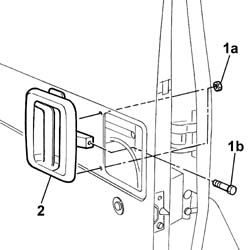

7020D30 SLIDING DOOR EXTERIOR HANDLE, LEFT OR RIGHT - R+R
- Path
- Procedures > 70 FITTINGS > 7020 LOAD COMPARTMENT DOORS > 7020D SLIDING DOOR CLOSURE DEVICES > 7020D30 SLIDING DOOR EXTERIOR HANDLE, LEFT OR RIGHT - R+R
- Kind
- repair procedure (removal / refitting; the operation number is the code)
- Applies to
- all engines; all production periods
- Interactive page
- https://sloeber94.github.io/elrnDB-fDct/en/#/244001470
Applies to: all engines; all production periods
 Removing
Removing
 Refitting
RefittingOp. 7040B18 L/H OR R/H SIDE TRIM (ONE) OF LUGGAGE COMPARTMENT/LOAD PLATFORM - ARRANGE
Op. 7020D34 SLIDING DOOR INTERIOR HANDLE - R+R
1. Undo the nuts (1a) and the bolt (1b) fixing the handle.
- Disconnect the safety rods for the lock and the pawl from the handle.
2. Remove the outer handle.

Applies to: all engines; all production periods
Refitting
Removing- Fit the outer handle in the special housing in the sliding door.
- Connect the safety rods for the lock and the pawl to the handle.
- Fasten the outer handle to the sliding door tightening the fixing nuts and the bolt.
Op. 7020D34 SLIDING DOOR INTERIOR HANDLE - R+R
Op. 7040B18 L/H OR R/H SIDE TRIM (ONE) OF LUGGAGE COMPARTMENT/LOAD PLATFORM - ARRANGE